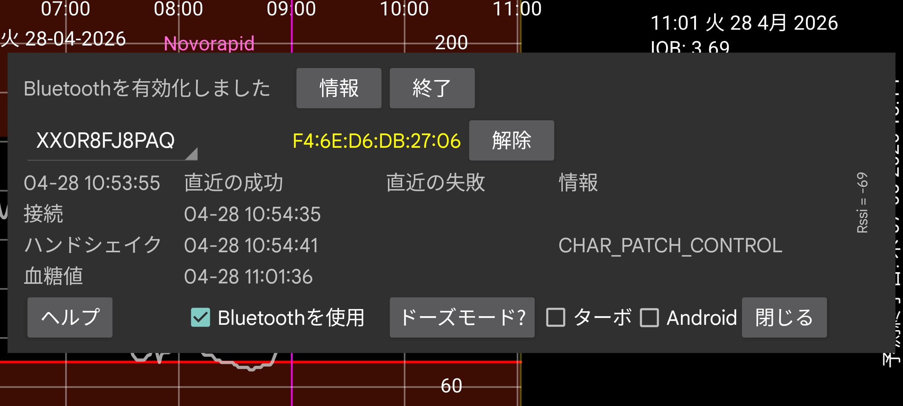

ar be de es fr hi it ja nl pl pt ru tr uk uz zh en
スピナーにセンサーの名前が含まれています。Juggluco が同時に複数のセンサーを使用している場合、情報を表示するセンサーを選択できます。
ドーズモード は、Juggluco が機能しなくなる原因となる Juggluco のバッテリー最適化を無効にする方法に関する情報の画面に進みます。
Bluetooth 履歴: Libre 2 では履歴は 15 分間隔の過去の値です。以前はスキャンによってのみ受信されました。このオプションをオンにすると、履歴値は Bluetooth 経由でも受信されます。また、他の動作も変わります。Libreview にはストリーム値の平均ではなく履歴値が送信されます。デメリットは遅いことです。WearOS ウォッチで問題になることがあります。このオプションは Libre 3 と US/CA/AU/KR Libre 2 センサーには影響しません。これらは常に Bluetooth 経由で履歴値を受信します。
バグ: WearOS の Libre 3 でのみ表示されます。Samsung がこのバグを修正するまで、Samsung Galaxy Watch 5 以降ではこれを設定する必要があります。このオプションがないと、血糖値は 1 分間隔ではなく 2 分間隔で受信されます。Watch 5 から Ultra までは Libre 2 センサーから常に 2 分間隔で値を受信します。
⏰: Dexcom G7 と ONE+ センサーへの接続のタイミングを正しくするため、Juggluco がアラーム機能を使うようにします。これがないと、端末が使用されていないときに深いスリープに入っている場合、センサーへの再接続のために起きないことがあり、すぐに血糖値を受信しません。私の WearOS ウォッチは深夜にこの問題がありました。おそらくほとんど動かなかったためです。後から埋め戻しと遅い起動のため、ウォッチやスマートフォンでは見えず、ログファイルのみで確認できました。私のスマートフォンではこの設定は不要で、オンにするとパフォーマンスが悪化するようです。
権限: Android 12 より前は、Bluetooth デバイスの検索のために位置情報の権限が必要でした。Android 12 以降には 近くのデバイス 権限があり、Bluetooth デバイスとのすべての接触に必要です。
デバイスアドレスは、判明している場合はセンサー識別子の後に表示されます。赤は US 系のセンサーを意味します。
解除: Juggluco にデバイスアドレスを忘れさせ、デバイスアドレスをスキャンさせます。一部のセンサーでは接続を確立するためにこれが必要で、Juggluco によって自動的に行われます。このボタンで Juggluco に手動でそれを行うよう指示できます。それも必要となる他の状況があるかもしれないためです。
終了: このセンサーへの Bluetooth 経由の接続を停止します。後でこのセンサーから再びストリーム血糖値を受信したい場合は、もう一度スキャンするか、センサー情報で「使用開始」をタッチするだけです。
ペア解除: Linx/Lumiflex/Aidex X センサーはペアリングしたスマートフォンやウォッチを記憶しており、他のデバイスとのバインドを拒否します。「ペア解除」を押すとセンサーにコマンドが送信され、成功すれば他のスマートフォンやウォッチが再びセンサーに接続できるようになります。左メニュー → ウォッチ → WearOS 設定 → 「センサー直接 ...」を使ってセンサーをウォッチへ/から転送する場合、ペア解除も自動的に行われるため、「ペア解除」は使うべきではありません。
クリア: (Linx/Lumiflex/Aidex X センサーへの接続時のみ表示されるボタン。)このボタンを押すと、センサーからすべての血糖値が削除され、新しいセンサーのようにセンサーが再起動されます。これにより、15 日以上センサーを使用できます。私が試したとき、センサー終了日後に受信した値は完全に無価値で、私が並行して動かしていた Libre 3 センサーの約半分の値でした。数週間後に 2 回目のクリアを行うと、血糖値は以前よりはるかに悪くなります(私の場合は非常に低い)。問題はセンサーの長期使用ではなく、クリアのようです。
クリアには Bluetooth デバイスのスキャンが何度も含まれます。Android がアプリにデバイススキャンを許可する一定時間内の回数は制限されています。それを超えると Android はリクエストを単に破棄します。できることは Bluetooth をオフにしてオンにすることだけで、これでこのカウントがリセットされます。
リセット: Sibionics 2 のみ。トランスミッターでセンサーを切り替える際にこのボタンを押す必要があります。Juggluco が古いセンサーに接続しているとき、または新しいセンサーに接続しているとき、あるいは両方で押します。トランスミッターが既に別のアプリでリセットされている場合は押すべきではありません。
ターボ: 接続エラーが減ることを期待してセンサーへの接触の努力を増やしますが、より多くのバッテリー電力を使用する可能性があります。Watch4 で FreeStyle Libre 2 センサーには必要なようですが、FreeStyle Libre 3 センサーや、私が試したスマートフォンのいずれでも必要ありません。
Android: Juggluco の代わりに Android にセンサーとの接続を行わせます。使用しないでください! ほとんどの場合、接続が確立されるまでに時間がかかります。このオプションは壊れた Android 13 のバージョンのために導入され、後に修正されました。このセンサー画面で最近の時刻が表示されない場合のみオンにすべきです。これは接続エラーやセンサーエラーは表示されないが値も受信されず、Bluetooth をオフ/オンにすることで再び動作させられる状態を意味します。同じスマートフォン上の 2 つのアプリで欧州 Libre 2 センサーを同時に接続しようとした場合(これだけが可能)、その状態に陥ることもあります。
情報: センサーの開始時刻、終了時刻、最終スキャン、最終ストリーム時刻を表示します。
Bluetooth Low Energy 経由で FreeStyle Libre 2 センサーに接続するには、Bluetooth がオンになっている必要があります。このアプリでセンサーが正常にスキャンされる前は、何も起こりません。センサーは FreeStyle Reader やスマートフォン上の他のアプレットに接続されていてはいけません。Abbott の Libre アプリはアンインストール、無効化、または強制停止されている必要があります。FreeStyle Reader でセンサーを開始してオフにできない場合、リーダーを ファラデーケージに入れて、センサーとの接触を防げます。
Bluetooth を使用がオンになっている必要があります。
上記の条件が満たされていても、アプリがセンサーから血糖値を受信するまでに長い時間がかかることがあります。多くの場合 1 分かかりますが、もっと長くかかることもあります。接続段階 が最も困難です。最も頻発するのは status=133 の失敗で、これは onConnectionStateChange(BluetoothGatt bluetoothGatt, int status, int newState) の status 引数です。これは Bluetooth デバイスが見つからない という意味です。ほとんどの場合、デバイスが見つかるまで時間がかかるだけです。センサーが別のデバイスに接続されている、一時的に正常に機能していない、他のデバイスが干渉している、Android の Bluetooth が機能していない可能性もあります。Bluetooth をオフ/オンにする、スマートフォンを再起動する、他のデバイスの Bluetooth 接続をオフにすると役立つことがあります。他の問題はセンサーをスキャンすることで解決することがあります。介在する水(身体の水分を含む)が問題になることがあり、センサーとは別の腕に WearOS ウォッチを装着し、腕の位置によりウォッチとセンサーの間に身体が来るように腕を持ったときに接続問題が発生することがあります。
AccuChek SmartGuide のあるユーザーから、Bluetooth 検索でセンサーが見つからなかったときに、Android の設定で接続済み Bluetooth デバイスに移動してセンサーを選択し「解除」を押すことで解決したと報告されました。
別のスマートフォンの Juggluco で(Bluetooth を使用 を有効にして)Libre センサーをスキャンすると、このスマートフォンから接続が奪われ、間にスキャンを挟みつつ取り戻すまでに時間がかかることがあります。